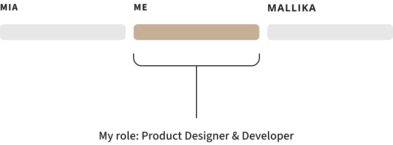
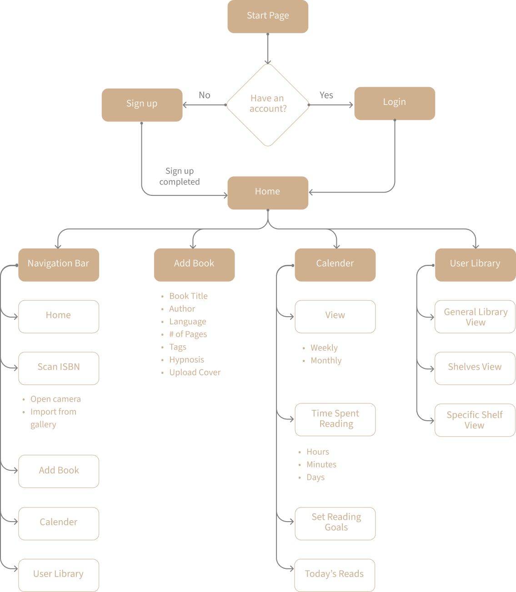
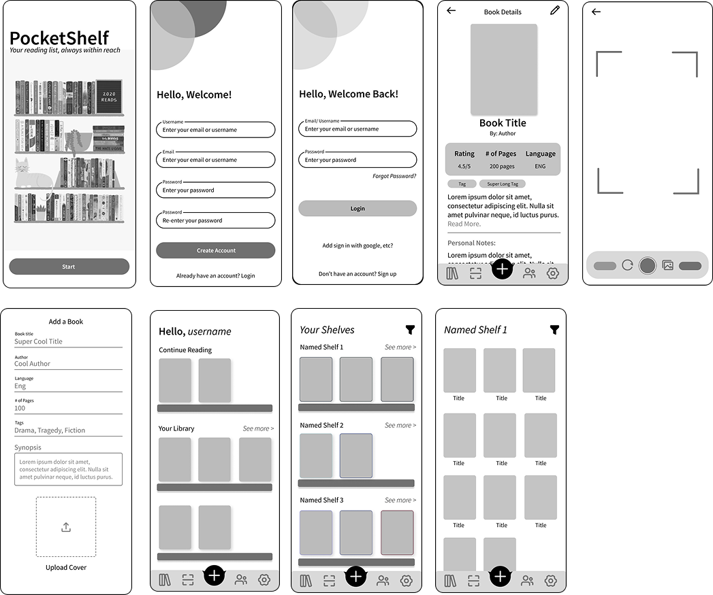
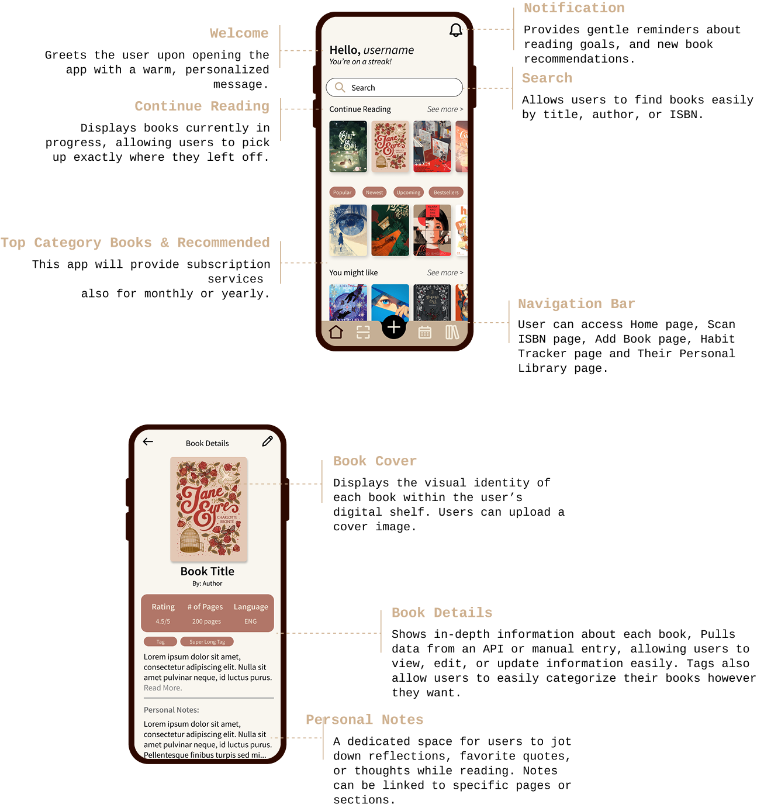
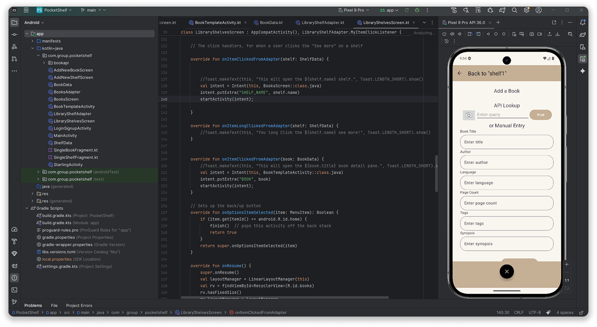

PocketShelf
UX / UI Design, Mobile Application DevelopmentA mobile reading tracker that makes it easy to log, organize, and reflect on your reads.

Context & Overview
PocketShelf began as a class project in a mobile application development course, where the goal was to design and build a mobile app from concept to implementation. I led the product design for the project, focusing on defining the experience, user flows, and interface design, while collaborating with teammates during development.
While many reading apps emphasize progress tracking or social features, I wanted to explore how a mobile experience could better support organization and reflection, treating books not just as items to check off, but as a more memorable experience
The product was designed as a mobile-first experience to support quick interactions, visual browsing, and lightweight reflection throughout a user’s reading journey.
The Problem
Many readers struggle to keep track of what they’ve read, what they want to read next, and what they’ve taken away from those books. Tools already out there often feel overly social, rigid, or transactional, sometimes prioritizing completion metrics over personal meaning.
- Readers want a simple way to organize books without friction
- Important moments, quotes, or reflections are easily forgotten
- Switching between multiple tools (notes apps, bookmarks, reading trackers) creates fragmentation
Understanding User Needs
Through early exploration, research, and analysis of existing reading apps, we focused on a few core user needs:
- Readers want to visually browse their collection in a way that feels personal
- They need a lightweight way to capture memories, quotes, or thoughts while reading
- The experience should feel calm and intentional, not gamified or competitive
- Core actions should be fast and accessible on mobile
These helped to build both the structure of the app and its later implementation.
Defining the Experience
Rather than designing PocketShelf as a social platform, we designed it as a personal reading companion. The experience centers around three core areas:
- A personal library for organizing books
- Individual book spaces for notes and memories
- Lightweight tracking to support continuity without pressure
I designed the experience around a small number of high-impact flows: Browsing and organizing a personal book collection Adding and revisiting notes, quotes, or memories tied to a book Tracking reading status without forcing completion metrics
Focusing on these flows helped me design the app, making sure it was intuitive and also helping me ensure that each screen had a clear purpose.
Wireframes & Layout Exploration
I explored layout and hierarchy through low-fidelity wireframes, prioritizing:
- Visual browsing over text-heavy lists
- Clear entry points into individual books
- Minimal UI elements to reduce distraction
Here is when we were able to present our initial app ideas to our peers & instructors to receive feedback about our app ideas, and features
Visual Design & Improvements
Following in-class critiques and feedback from both instructors and peers, I revisited the design to:
- Improve hierarchy and clarity on key screens
- Simplify interactions that felt visually heavy
- Expand on additional features that would enhance the user’s experience
The visual design was intentionally warm and minimal, using soft color palettes and gentle typography to create a calm, reading-adjacent experience.
Implementation & Iteration
After finalizing the design, the app was implemented in Android Studio as part of the course. Seeing the designs translated into a working application helped validate interaction decisions and revealed opportunities for refinement.
Reflection & What I’d Explore Next
If I continued developing PocketShelf, I would explore:
- Smarter organization through tags or themes
- Accessibility improvements for text-heavy interactions
View the Github here!
Designer, Developer
Academic Project